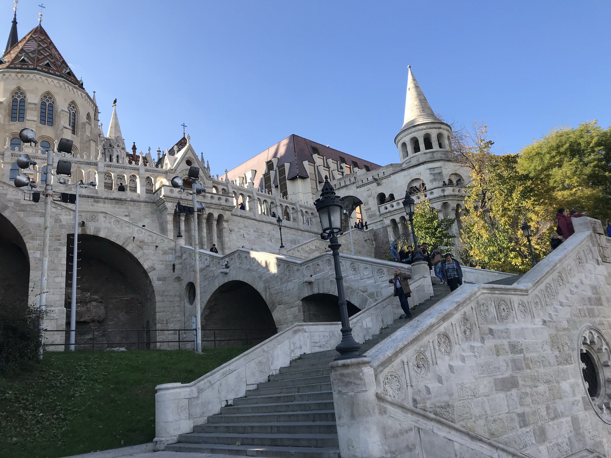
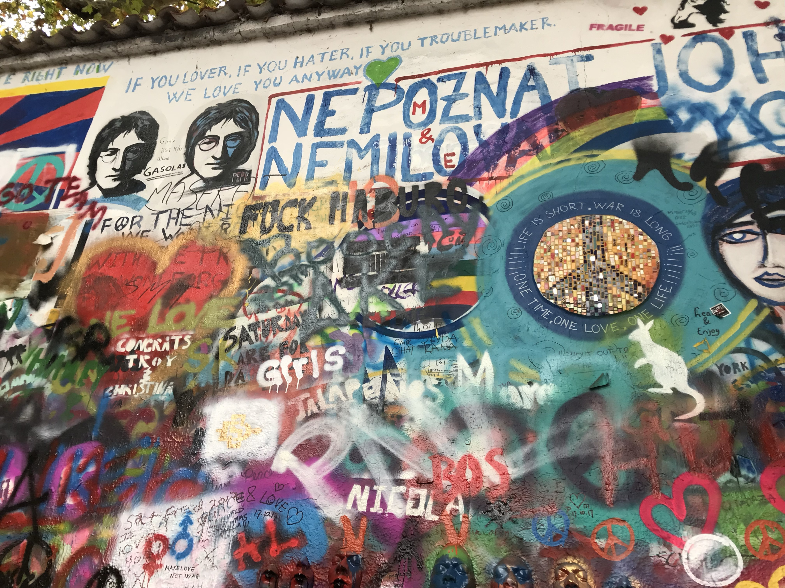
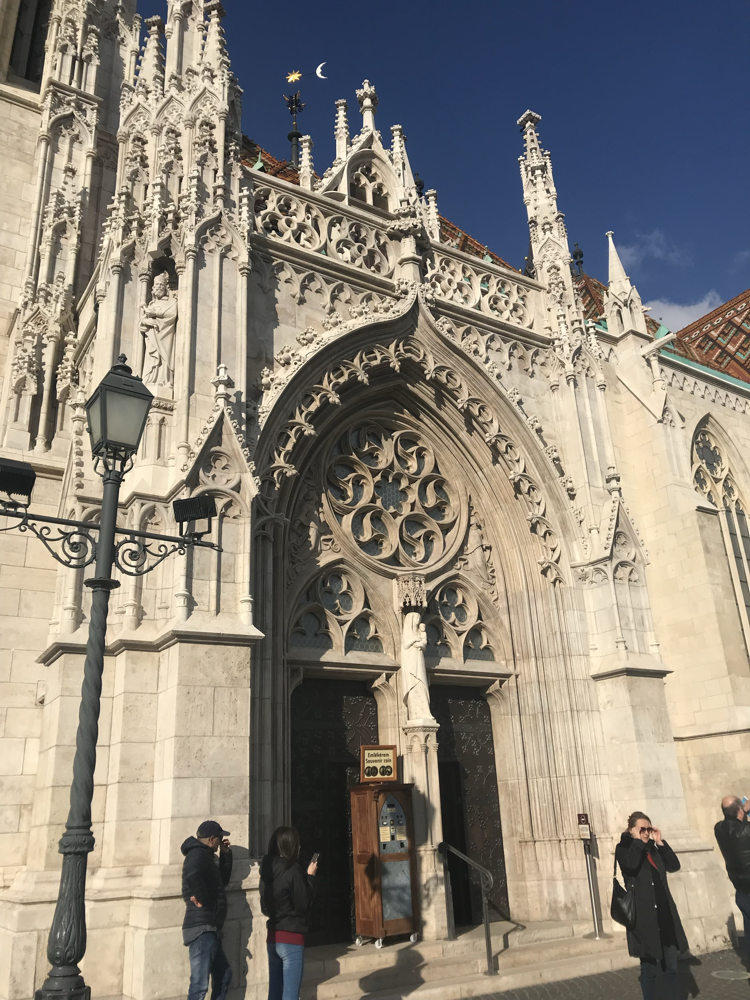
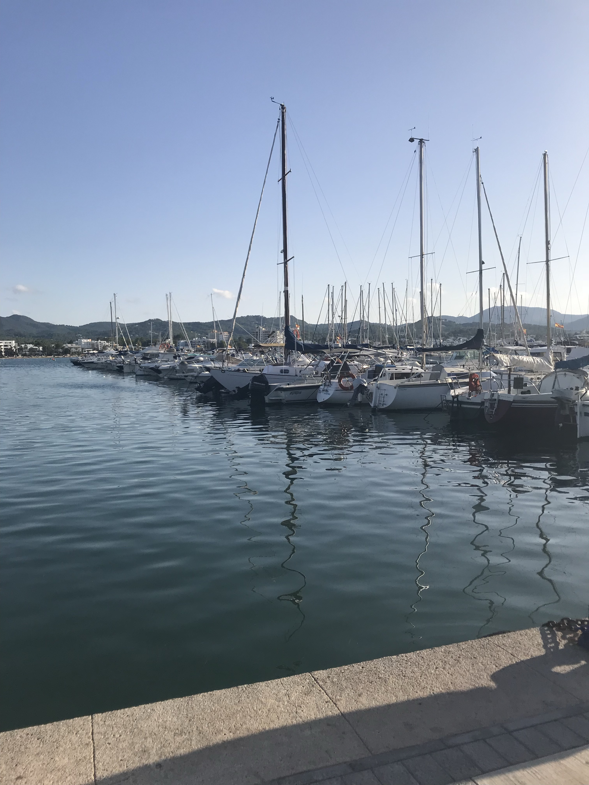
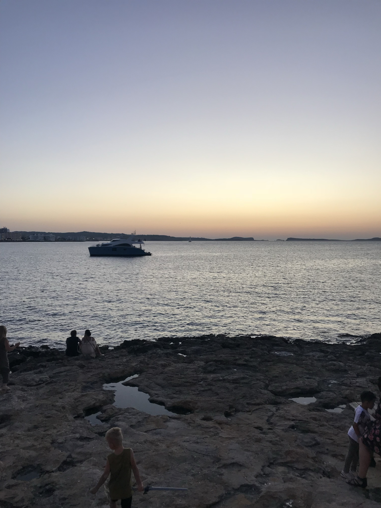

Budapest
I visited Budapest with one close friend. Since the flight had a decent price, We planned a weekend trip to the Capital of Hungary. We were able to visit the Buda Castle, the Hungarian Parliament Building, and Fisherman’s Bastion as shown in the picture. The average food price in Budapest is Ft2,263 per person which is around $7.47 per person. Therefore, we were able to try many new Hungarian foods.
Prague
A group of students and I decided to visit Prague because of its interesting tourist attractions. We visited the Prague Castle, the Charles Bridge, the Jewish quarters, the Prague Astronomical Clock, and the Lennon Wall. A friend and I, decided to have a private tour around the Jewish Quarters. We were impressed with all of the five synagogues including the Spanish Synagogue which was my personal favorite. This synagogue is the newest in the area, it was restored in 1998. I was amused of the Jewish Quarters had such an importance in Prague, it made me feel welcomed by the culture.
 Ibiza
My roommates and I decided to travel to Ibiza for one weekend. Ibiza is one of the Balearic islands in Spain. It is known for its nightlife and beaches. We visited a nearby island by ferry called Formentera. It is a nice place to spend the day and eat at the local restaurant. This beach has a nudist part, were a lot of Europeans spend their day relaxing. Overall, Ibiza was a very fun place to visit.
 